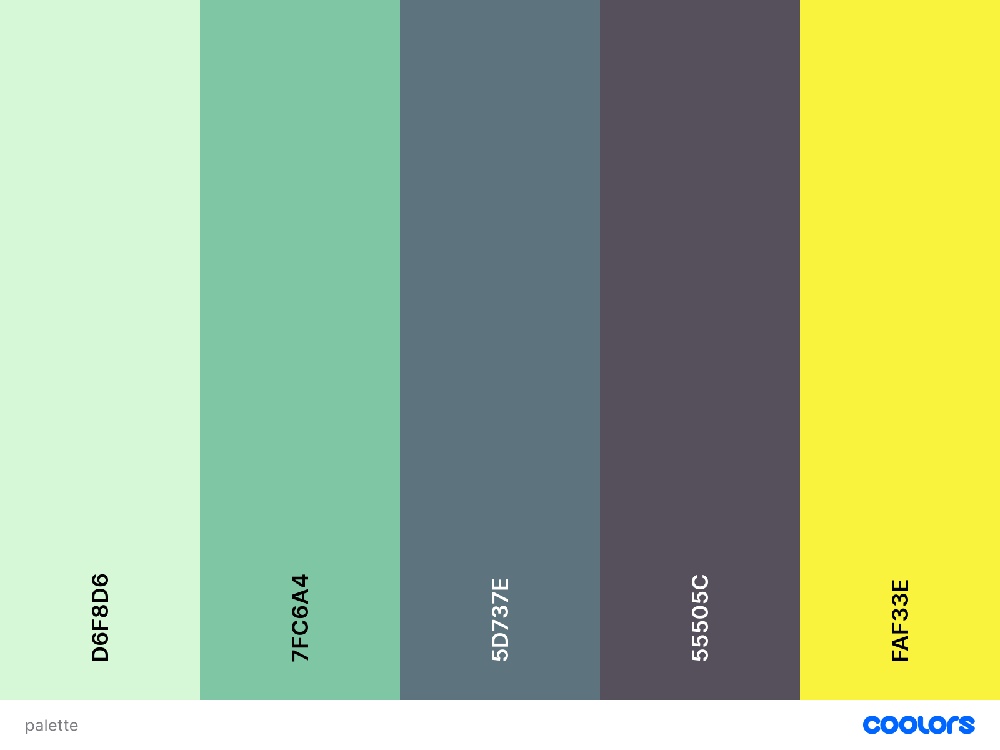

Iteration One
Original Wireframes
I look forward to seeing if these wireframes materialize with the addition of CSS.


Aesthetic Inspiration
Aesthetically I am drawing inspiration from "Zines". I want the website to have the essence of physical media. I am particularly interested in the style of collages and screen printing and would like my website to have that essence.


Flow of Website
I would like almost every part of the website to be accessible from any other part of the website.

Fonts and Colours
I want the structure and feel of the site to be quite grungy and harsh and therefore I am opting for a softer font.

The following colours are under consideration:

Iteration Two
Wireframes


User Flow
File Structure

Flow of the site

Style Guide
Fonts

For general text
For headings and interesting elements
Inspiration
I would still like to emulate physical media. I am looking into stylistic elements that mimic paper and scree printing
css-paper-effects